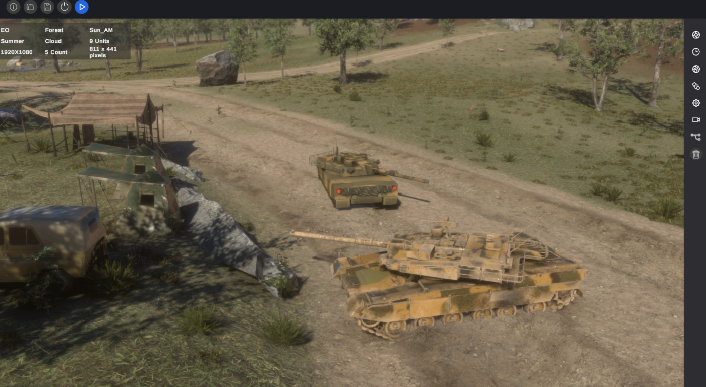
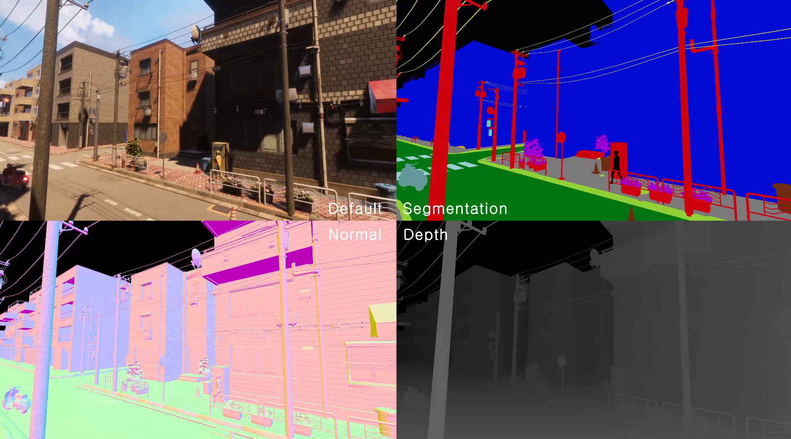
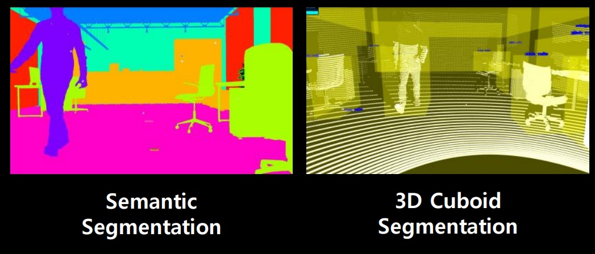
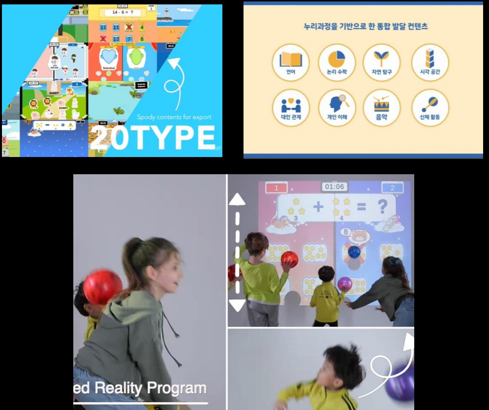
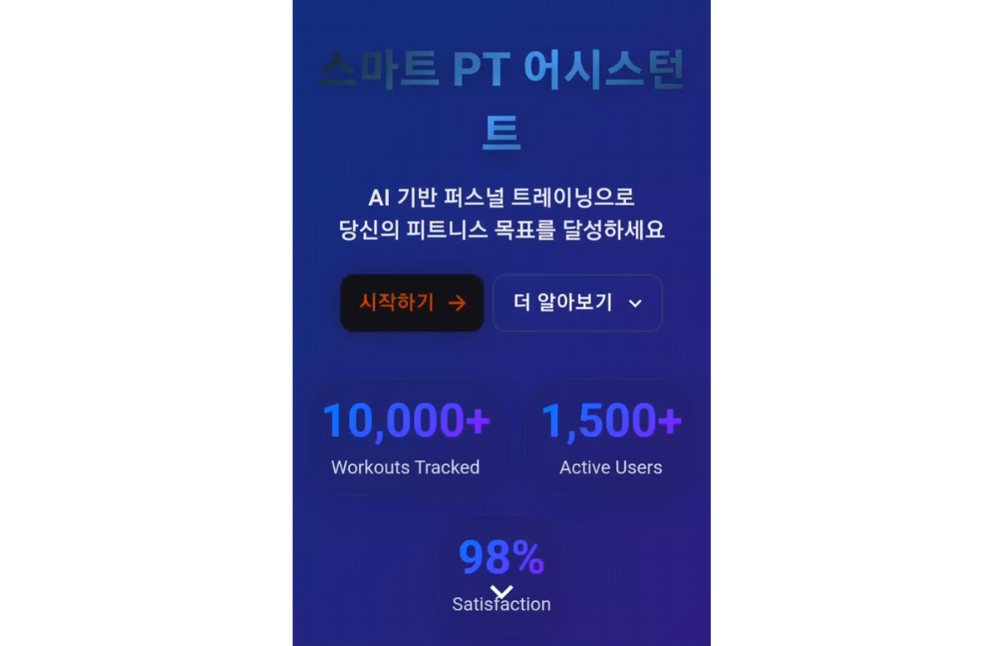
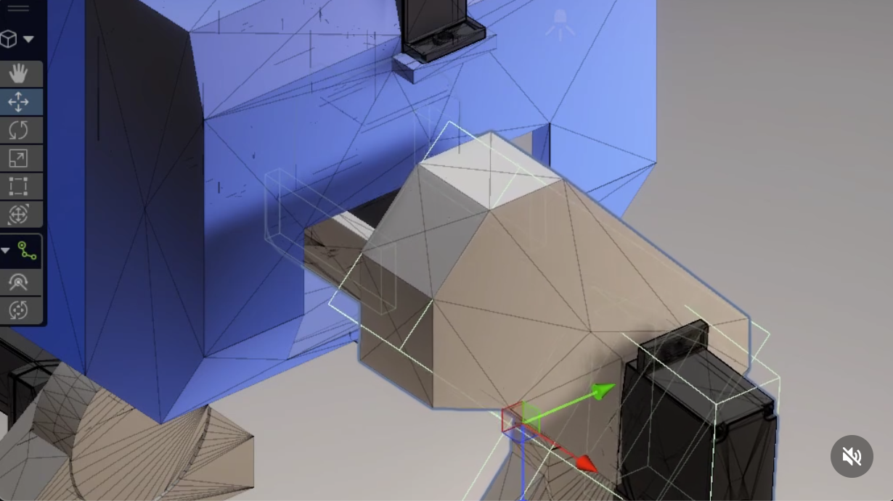
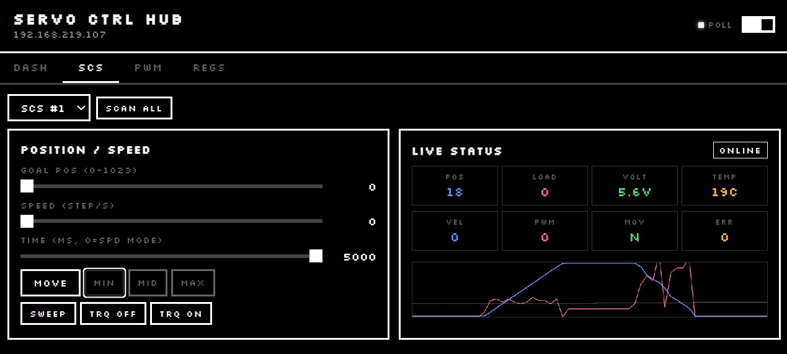

소개
Naver LABs, 국방과학연구소(ADD)와 AI 합성 데이터 파이프라인을 구축했고, KOCCA·유니티 코리아와 함께한 교육에서는 취업률 85%, 강의 평점 4.6을 기록했습니다.
최근에는 생성형 AI(Claude, ChatGPT, Gemini)를 개발 교육에 도입해 단순 코딩을 넘어 문제 해결 중심의 커리큘럼을 운영하고 있습니다.
"기술과 사람 사이에서 언어를 통역하는 것, 그게 제 강점입니다."
LLM 기반 AI 에이전트 오케스트레이션과 MCP(Model Context Protocol)를 활용한 워크플로우 자동화에도 관심을 두고 있습니다. 단순 자동화를 넘어 AI가 실제 산업 시스템과 연결되는 흐름이 앞으로의 핵심이라고 생각합니다.
// 사이드 프로젝트 & 취미
Unity ML-Agents 기반 강화학습으로 UR16e 파지 학습과 2족 보행 로봇을 연구 중입니다. 설계부터 3D 프린팅으로 직접 몸체를 제작하며 시뮬레이션과 현실을 오가는 작업이 요즘 가장 즐거운 취미예요.
기술 스택
Innovation & R&D
Education & Leadership
Software Design & Collaboration
Core Tech Stack
경력
KetchupDeck Studio
디지털 트윈 전문가 & K-Digital 인스트럭터
서울 · 하이브리드 근무
산업 현장에 즉시 투입 가능한 실무형 디지털 트윈 전문가 양성을 목표로, 고도화된 기술 교육 커리큘럼을 설계하고 총괄했습니다.
- Mitsubishi PLC와 Unity 가상 공장을 TCP/IP, MQTT로 실시간 연동하는 커리큘럼 설계 및 총괄
- UR 로봇 IK(역기구학) 기반 티칭 시스템 구현, PLC 및 Firebase 실시간 연동 심화 프로젝트 도입
- KOCCA, 유니티 코리아와 파트너십으로 K-Digital Training 프로그램 진행
- 2D/3D, AR/VR, 네트워크, OOP, 자료구조, 알고리즘, Git, DB 등 종합 개발 교육
씨이랩 (Xiilab)
리드 소프트웨어 엔지니어, AI & 디지털 트윈
서울 · 대면근무
AI/ML 애플리케이션을 위한 합성 데이터 플랫폼 및 디지털 트윈 솔루션 개발 팀을 이끌었습니다.
- Naver LABs, 국방과학연구소(ADD)와 협력하여 AI 합성 데이터 생성 파이프라인 설계 및 주도
- Unity HDRP 커스텀 셰이더로 가상 LiDAR·적외선(IR) 다중 센서 시뮬레이션 구현
- OpenCV 멀티스레드 아키텍처 도입으로 데이터 처리량 30%+ 최적화
- 9명 팀(개발 6, 아트 3) 리딩 — 로드맵, 기술 아키텍처, Git 기반 애자일 워크플로우 총괄
- NVIDIA PLM Conference 2023 연사 — 'Omniverse 기반 개방형 디지털 트윈 전략' 발표
- CCTV 실시간 WebGL 시각화 시스템 개발 (FSM, 오브젝트 풀링 최적화)
VVR
XR 개발자, 팀 리드
서울
몰입형 XR 교육용 게임 개발을 주도했습니다.
- Kinect, LiDAR 3D 뎁스 센서 활용 XR 교육용 게임 엔드-투-엔드 개발
- Unity CDN·에셋 번들 기반 자동 업데이트 시스템 구축
- 4인 팀(개발 3, 디자인 1) 관리 — 기획부터 배포까지 전체 라이프사이클 감독
Keeworks, Inc
이미지 프로세싱 엔지니어
경기도 광명시
산업 제조 공정의 불량 검출을 자동화하는 머신 비전 소프트웨어를 개발했습니다.
- C++ 기반 자동 광학 검사(AVI) 시스템 개발
- 철도 화물 열차, 자동차 브레이크 패드, 카메라 센서 픽셀 불량 검사
- MATROX MIL, OpenCV, MFC로 솔루션 개발 — MCU와 통합하여 공장 자동화 구현
프로젝트
 발표
발표
NVIDIA PLM Conference 2023
NVIDIA Omniverse 기반 개방형 디지털 트윈 구축 전략



AI 합성 데이터 생성 시뮬레이터
Unity HDRP 기반 초실사 합성 데이터 파이프라인 · Naver LABs, 국방과학연구소(ADD) 협업 · LiDAR, IR, Segmentation, Depth 다중 센서 시뮬레이션


스포디 — 구독형 확장현실 교육게임
스포츠와 교육을 융합한 인터랙티브 XR 교육 서비스 · Kinect/LiDAR 기반 실시간 모션 인식 · 누리과정 기반 20종 통합 발달 콘텐츠

Spot Curriculum Learning
Boston Dynamics Spot PPO 기반 단계적 학습

UR16e ML-Agent Training
UR16e 강화학습 훈련 시리즈

AI Personal Trainer Platform
GPT-4 · LangChain · Pinecone 기반 AI 운동 코칭 플랫폼 · 바이오메카닉스 데이터 파이프라인 및 개인화 인사이트 생성

ROS2 Navigation in Unity (1)
Unity 환경에서 ROS2 Navigation 구현

ROS2 Navigation in Unity (2)
고급 Navigation 기능 구현

ROS2 SLAM in Unity
Unity에서 SLAM 매핑 구현

A* Congestion-Aware Pathfinding
다중 로봇 교착 해결 알고리즘

Unity-MELSEC PLC Connection
Unity와 PLC 실시간 연동 및 Realtime DB

Universal Robot Teaching
Unity 내 로봇 티칭 시뮬레이터

PLC Simulation with 6-Axis Robot
6축 로봇 PLC 시뮬레이션
Kinetic 7-Segment Clock
3D 프린팅 자체 제작 · Arduino Mega & 30개 SG90 서보
3D Printing
Biped Robot — 제작 과정
3D 모델링·프린팅 부품 설계부터 조립까지
3D Printing
Biped Robot — 첫 걸음
디지털 버스 서보 제어 · 2족 보행 시작
Biped Robot — 시뮬레이션
강화학습 시뮬레이션 환경 구축 중

Local MQTT Broker (WPF)
WPF로 제작한 로컬 MQTT 브로커

Unreal Cinematic Study
Unreal Engine 시네마틱 스터디
학력
국가평생교육진흥원 (학점은행제)
컴퓨터 공학 학사
Korea Polytechnic
임베디드 시스템 하이테크
한국방송통신대학교
미디어 사이언스 학사